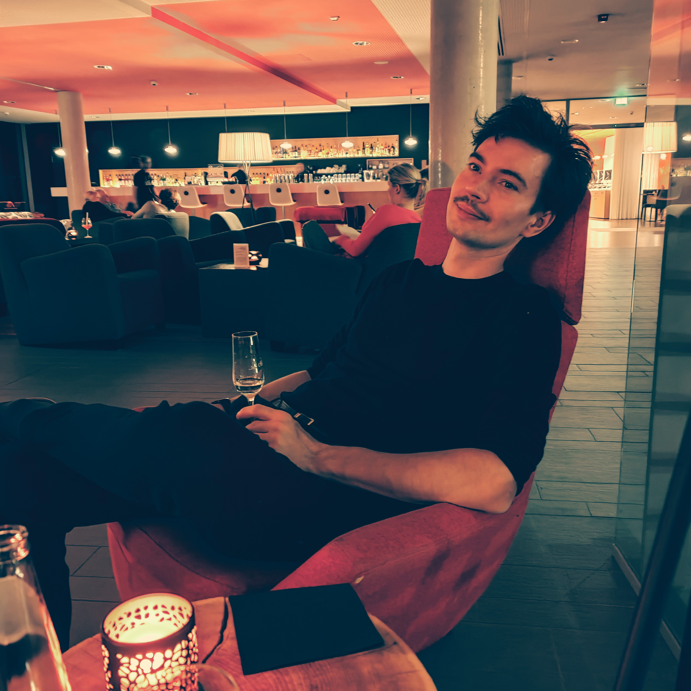

I am a senior staff scientist at Niantic Spatial, working on the Visual Positioning System (VPS). I work at the intersection of machine learning and computer vision, 3D vision in particular. My research revolves around topics such as visual relocalisation, pose estimation, end-to-end learning, robust parameter estimation and feature matching.
I publish my research in the top conferences in computer vision where I am also active as area chair and reviewer. I co-organized several tutorials and workshops on visual relocalisation, object pose estimation and robust parameter estimation.
E-Mail Google Scholar Bluesky LinkedIn CV